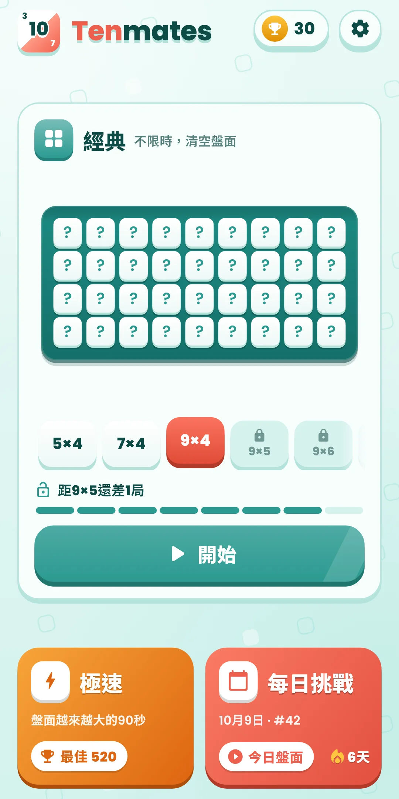
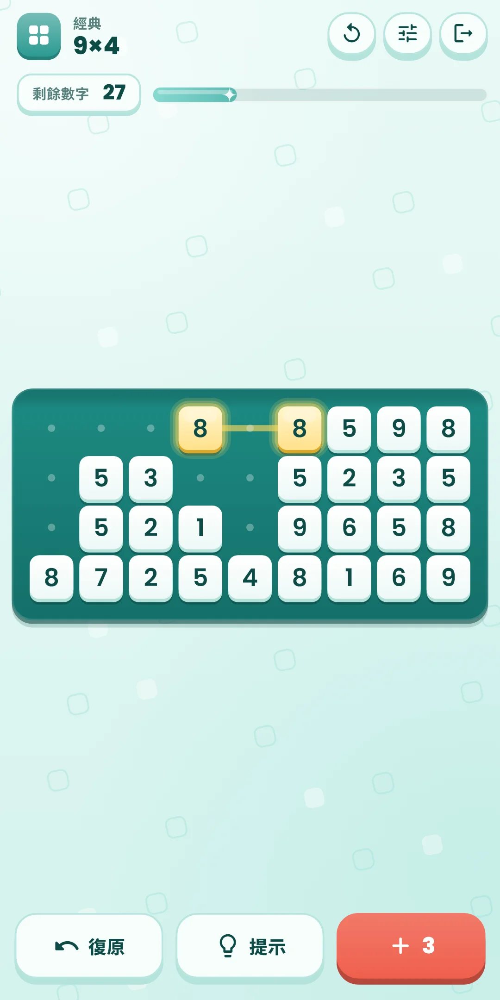
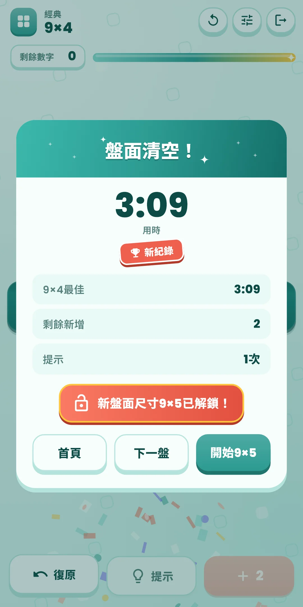
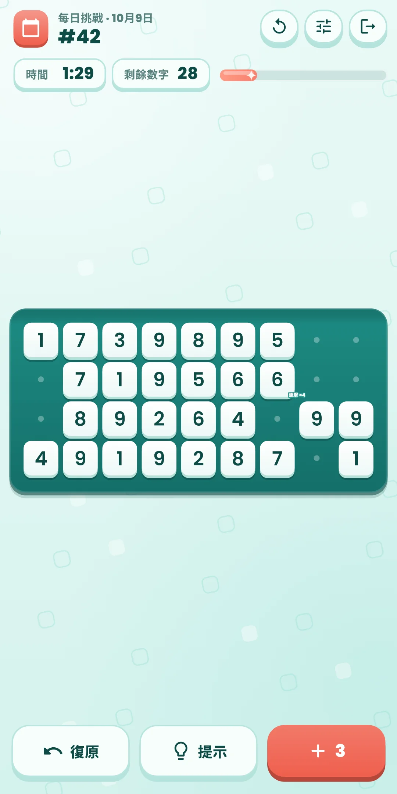
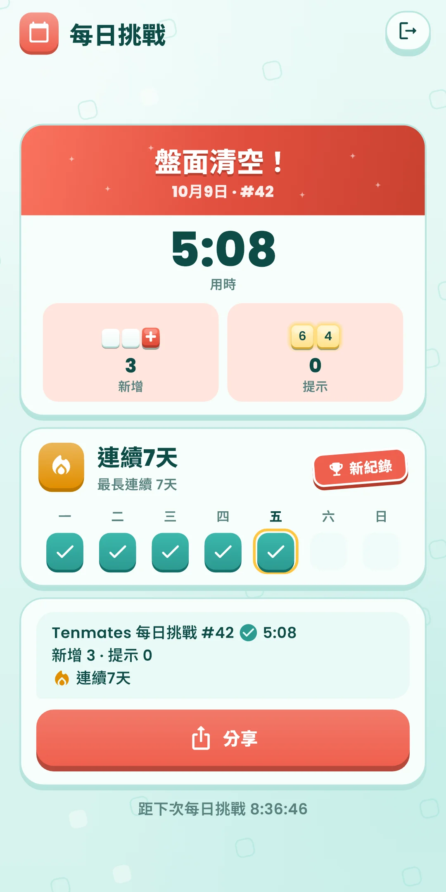
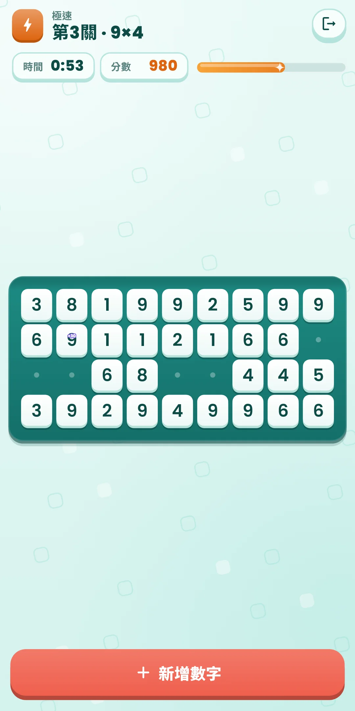
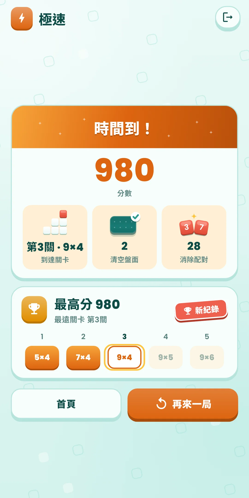
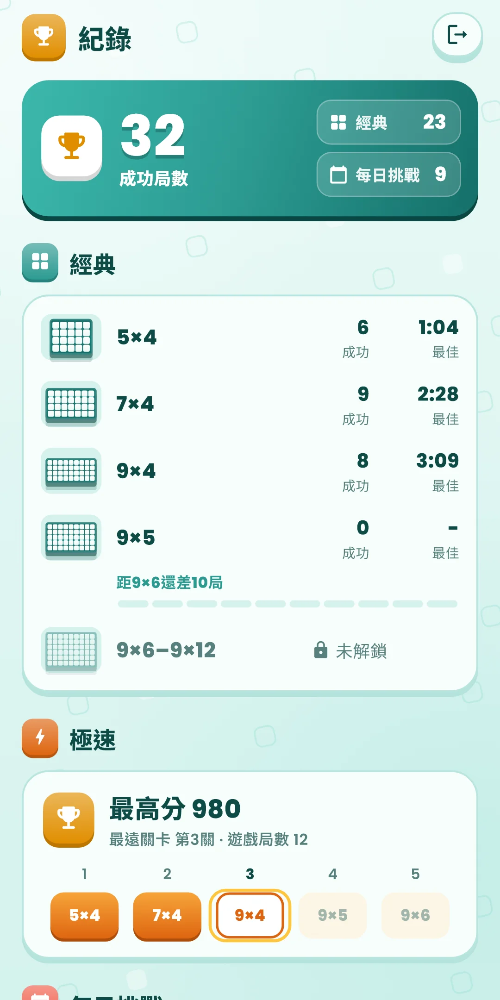

Tenmates
玩法說明
玩法說明








| 應用程式名稱 | Tenmates |
|---|---|
| 版本 | 1.0.0 |
| 開發 | Willee Project |
| 支援平台 | Android |
在盤面上找出相同或相加等於 10 的兩個數字，把它們消除，直到清空盤面的數字益智遊戲。
已消除的格子會留下淡淡的點，方便你一眼看出中間只隔著已消除格子的配對。一列全部消除後，這一列就會消失，下面的列會往上移。
沒有可以消除的數字時，用下方的 ＋ 按鈕把剩下的數字依閱讀順序接到盤面末尾。 按鈕上的數字是剩餘次數。經典和每日挑戰每盤 3 次，極速不限次數。最後一列沒填滿的空位會顯示成和已消除格子一樣的點（下次新增會填進去）。
下方按鈕（經典、每日挑戰）：
| 按鈕 | 作用 |
|---|---|
| 復原 | 一步一步撤回最近的操作（消除、新增數字）。不限次數 |
| 提示 | 點亮一條還能清空盤面的路線上的配對。不限次數 |
| ＋ 新增 | 把剩下的數字接到盤面末尾。按鈕上的數字是剩餘次數 |
上方列右側的重新開始（↻）按鈕：
| 選項 | 內容 |
|---|---|
| 這一盤從頭開始 | 把盤面恢復到最初的樣子重新開始。經典模式的用時和提示也會重新計算，每日挑戰則繼續累計當天的用時和提示 |
| 換一盤（僅經典） | 放棄這一盤，換同一尺寸的另一盤。放棄的盤面不算成功 |
沒有可以消除的數字、新增次數也用完時，會出現「新增次數已用完」面板。這次算作失敗，不能復原。可以從頭再來，或是換一盤。每日挑戰沒有換一盤，而是放棄。卡住之前點提示，即使已經無法清空的盤面，也能退回到還能清空的位置。
Tenmates 每日挑戰 #12 ✅ 4:12 新增 1 · 提示 0 🔥 連續5天
✅ 表示清空了盤面（放棄則是 ❌），旁邊是用時。第二行是使用的新增和提示次數，第三行是連續紀錄（兩天以上才顯示）。#12 是每日挑戰的編號：發布日是 #1，每天加一，編號相同就是同一個盤面。結果畫面會顯示距離下次每日挑戰的時間。新的每日挑戰在裝置時間的午夜開放。
從主畫面右上角的獎盃按鈕打開。按鈕上顯示成功局數。
點主畫面右上角的齒輪打開。遊戲中，可以用上方列右側的調整按鈕直接變更聲音、震動、特效和大號數字。
| 項目 | 內容 |
|---|---|
| 音效 | 開關選取和消除數字時的聲音。連續消除配對時，聲音會一點一點升高 |
| 震動 | 開關選取和消除數字時的震動 |
| 減少特效 | 一次減少所有特效（消除動畫變短，沒有移動）。開啟時，下面的特效開關會顯示為關閉並變淡。也會遵循裝置的「移除動畫」設定 |
| 特效開關 | 在「減少特效」下面分別開關每種特效：晃動（消除一列時盤面「咚」地下沉、旁邊的格子彈起、不是配對的格子晃動）、閃光（閃光、光芒、閃爍，提示的閃動）、碎片與彩紙、連擊與稱讚文字、動畫（兩個數字靠攏相遇、一列被掃走的動畫；關閉後會在原地短暫消失）。如果晃動或閃光讓你不舒服，只關閉那一項就好 |
| 大號數字 | 放大顯示盤面上的數字。其他文字的大小跟隨裝置的字型大小設定 |
| 玩法 | 再看一次首次引導 |
| 語言 | 跟隨系統，或直接選擇 |
| 隱私權選項 | 重新打開廣告同意視窗。只在需要徵得同意的地區（如歐洲）顯示 |
| 關於 | 版本、本說明、隱私權政策、開放原始碼授權 |